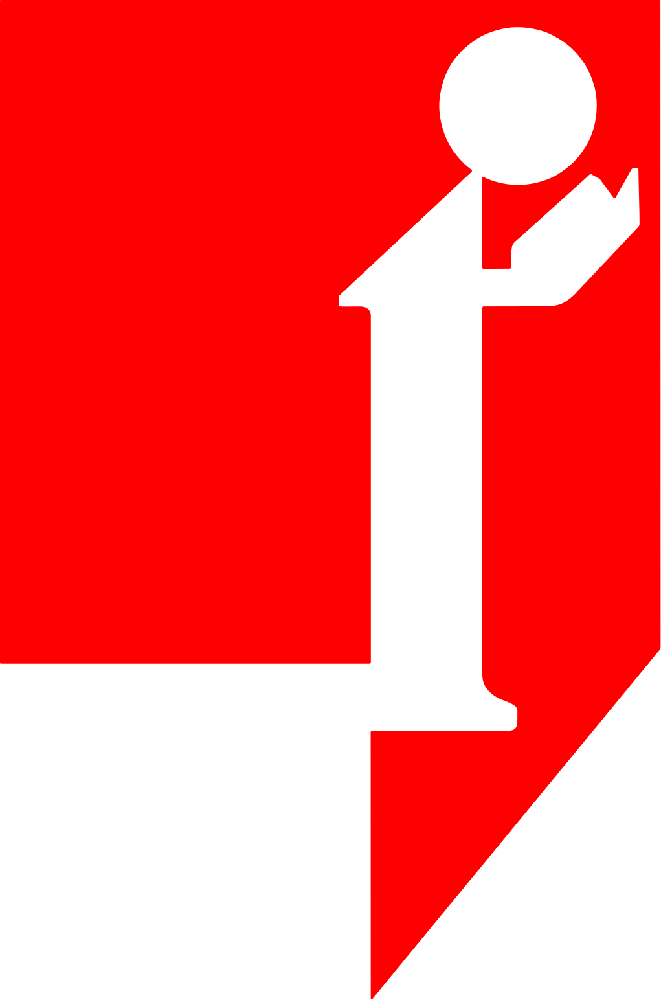

Una clase hecha para que hables.
Seis pasos en 120 minutos. Uno de ellos es solo tuyo: pasar al frente y tomar la palabra. Los otros cinco existen para que ese momento salga bien.
Basado en investigación,
no en modas.
Cada paso viene de lo que la investigación sobre aprendizaje de idiomas muestra que funciona. Sin promesas mágicas.
Aprender usando el idioma para lograr algo
Un metaanálisis de 52 estudios encontró efectos favorables de los programas basados en tareas.
Bryfonski y McKay, 2019Explicar tus propios errores, con claridad
La instrucción explícita y la corrección rinden más que solo exponerse al idioma.
Norris y Ortega, 2000 · Goo et al., 2015 · Lyster y Saito, 2010Recordar a propósito, con días de por medio
48 experimentos muestran que la práctica espaciada mejora lo que se retiene a largo plazo.
Kim y Webb, 2022Niveles que dicen qué puedes hacer
Los niveles A1–C1 del Marco Común Europeo describen tareas concretas, no páginas de un libro.
Consejo de Europa, volumen complementario 2020Por lo que puedes hacer,
no por las horas que asististe.
- Prueba de ubicaciónEscrita corta y una conversación de 10 minutos para saber dónde empiezas.
- Lista de logrosCada nivel tiene su lista de cosas que vas a poder hacer. Al cerrar cada clase marcas las que ya lograste.
- PortafolioTus turnos al frente y tus escritos corregidos: tu avance, a la vista.
- Tarea por unidadUna tarea real evaluada con criterios claros: alcance, corrección, fluidez, interacción.
- Prueba de fin de nivelOral y escrita, con el formato del examen internacional de tu nivel.
- Examen internacionalOpcional. Te preparamos; certifica Cambridge, IELTS, TOEFL, Aptis o MET.
Aprender inglés
no es magia.
Si alguien te lo promete, desconfía. Esto es lo que nunca vas a oír en Tutor, y por qué.
«Inglés en 3 meses»Como referencia, Cambridge calcula entre 180 y 200 horas guiadas solo para llegar a A2.«Aprende sin gramática»La explicación clara de tus errores funciona mejor, sobre todo en adultos. La vemos a partir de lo que tú dijiste.«Nivel nativo»Llegamos hasta C1: fluidez y espontaneidad en lo social, lo académico y lo laboral.«Te damos un título»Los programas de idiomas entregan un certificado de conocimientos académicos y no conducen a título profesional.
¿Listo para tu turno?
Haz la prueba de nivel y te ubicamos en un grupo para tu clase de prueba.
Haz la prueba de nivel